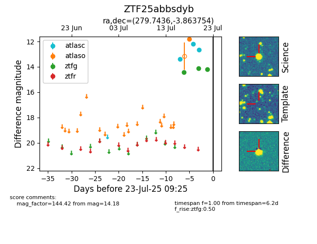

Target ZTF25abbsdyb at 2025-07-23 11:48, see:
FINK: fink-portal.org/ZTF25abbsdyb
Lasair: lasair-ztf.lsst.ac.uk/objects/ZTF25abbsdyb
ALeRCE: alerce.online/object/ZTF25abbsdyb
alt names
ZTF25abbsdyb (ztf,fink)
coordinates:
equatorial (ra, dec) = (279.7436,-3.86375)
galactic (l, b) = (28.0724,+1.00498)
photometry
last atlasc=12.66, atlaso=11.81, ztfg=14.18
3 atlasc, 1 atlaso, 3 ztfg detections
